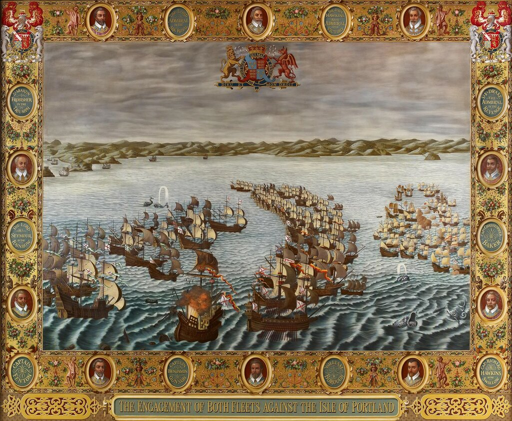
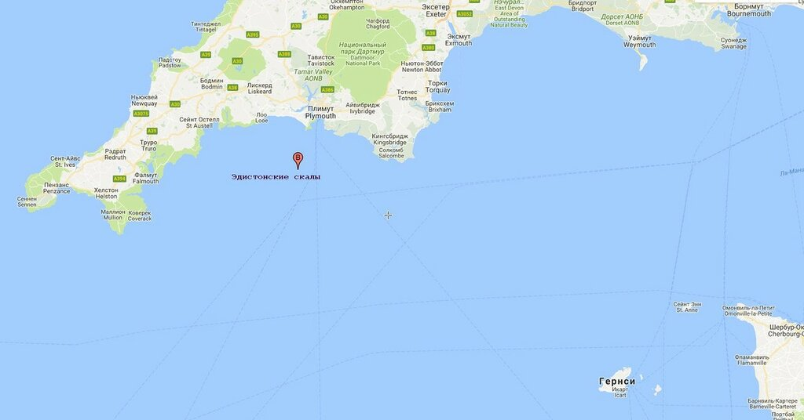
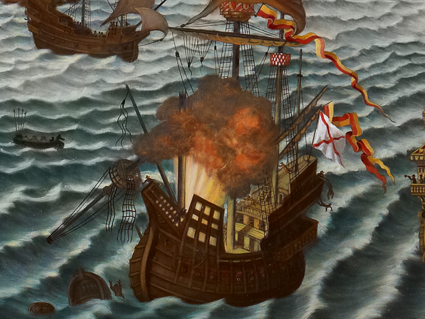

Взрыв пороха на галеоне Гипускоанской (Баскской) эскадры Испанской армады «Сан Сальвадор» 31 июля 1588 года. Копия гобелена, сгоревшего при пожаре Вестминстерского дворца в 1834 году.
Итак, ознакомившись со взглядами испанцев на тактику действий корабельных соединений, вернемся к Дневнику солдата (Дневнику Рекальде), в котором отражен взгляд на события со стороны участника похода Непобедимой армады к берегам Англии.
[Не устану повторять: необходимо критически подходить к переводам исторических документов, если не читать, то хотя бы сопоставлять такие переводы с текстами оригиналов. Иначе можно встретить такой вот пассаж (не буду называть источник, чтобы не позорить авторов):
Первый контакт между флотами произошел 31 июля, когда армада вошла в «рукав». Ветер сменился на восточно-северо-восточиый, и англичане начали маневр, стараясь извлечь из погоды пользу.
Это, нужно думать, «перевод» текста из книги John Tincey, Armada Campaign–1588 (Osprey, 1988):
The first contact between the fleets came on 31 July as the Armada entered "the Sleeve'. The wind changed to west-north-west and the English manoeuvred to gain the weather gauge of the Armada. ]
Ранее в нашем рассказе мы остановились на том моменте, когда 31 июля английский флот зашел в тыл испанской армаде, выиграв тем самым ветер. Произошло это неподалеку от Плимута, в пяти милях к западу от Эдистонских скал

Карта входа в Ла-Манш.
После боя на северном фланге испанцев между английской эскадрой и галеоном Сан Хуан (San Juan), на борту которого находился адмирал Хуан Мартинес де Рекальде, последующие события автор дневника описывает следующим образом:
«Как мы уже говорили, они [английские корабли] отступили, хотя и продолжали следовать за нами на дистанции около полутора лиг. Многие на других кораблях нашей армады завидовали в этот день подвигу, который совершил корабль адмирала [Рекальде], им казалось, что каждый из них мог бы поступить в бою так же. Но последующие события показали, что эти мысли отличались от действительности.
Около четырех часов пополудни этого дня флагманский корабль (la nao capitana) дона Педро де Вальдеса (Don Pedro de Valdés), на котором он сам находился, и другой корабль эскадры столкнулись, в результате флагманский корабль потерял бушприт и фок-мачту (el baoprés y trinquete). Ночью противник, который, как мы говорили, следовал за нами по пятам, заметил, что флагман потерял свой такелаж, открыл по нему огонь и захватил его, воспользовавшись отсутствием помощи с нашей стороны. Адмирал [Рекальде] попытался оказать помощь этому кораблю, но не смог идти в бейдевинд из-за угрозы потерять поврежденную огнем противника грот-мачту (el árbol mayor). Хотя вся Армада видела повреждения указанного вице-флагмана (almiranta), и предпринимаемые им попытки, ни один корабль не пришел на помощь. И если бы адмирал не привлек дополнительно моряков с других кораблей своей Бискайской эскадры для крепления мачты, она упала бы в море, из чего каждый может понять, что флагмана ждала бы та же участь, что и дона Педро де Вальдеса, которому другие корабли оказали незначительную помощь при повреждении его такелажа. Поэтому все упрекали дона Флореса де Вальдеса, его считали виновным в неоказание помощи Диего Педро де Вальдесу. Это была очень большая несправедливость, как мы могли легко видеть. Хотя утверждалось, что погода помешала помочь ему, на самом деле погода была достаточно спокойной, чтобы предпринять хоть какие-нибудь попытки, особенно принимая во внимание наступившую ночь и ясное лунное небо, которые давали возможность провести подготовительные работы. Мы видели, что противник не выказывал желания подойти к поврежденному кораблю, а предпочитал обстреливать его из своих пушек, и что флот противника не так силен, как наш. И мы знали, что если бы наш флот лег в дрейф, противник сделал бы то же самое, и всё можно было бы исправить.
1 августа мы оставили один из кораблей эскадры генерала Мигеля де Окендо (Miguel de Oquendo), а именно, корабль вице-флагмана этой эскадры, так как днем раньше (в то же самое время, когда корабль адмирала потерял свою грот-мачту), взорвался его пороховой погреб, вызвав пожар на палубах и опалив большую часть находящихся на борту людей. Число погибших от огня и взрыва на этом корабле превысило две сотни человек, и после эвакуации оставшихся в живых, команда покинула корпус, не предприняв ничего для приведения его в негодное состояние – ни предали его огню (quemarle), ни затопили (echar a fondo), чтобы предотвратить захват его врагом.
Примечание 8. Обсудим подробнее описанные в дневнике события.
Начнем с последнего эпизода, связанного со взрывом пороха на галеоне Гипускоанской (Баскской) эскадры «Сан Сальвадор».
Приведем фрагмент изображения, помещенного в начале поста, в более крупном масштабе

Взрыв произошел после прекращения боя англичан с Сан Хуаном, командующий Армадой герцог Медина-Сидония в своем донесении королю описывает это событие очень кратко и буднично: на борту галеона взорвалось несколько бочек с порохом. Взрывом были уничтожены кормовые части двух палуб и кормовая надстройка (на приведенной иллюстрации взрыв ошибочно изображен в носу корабля). С флагманского корабля Армады немедленно был произведен выстрел, чтобы привлечь внимание флота к происшествию на Сан Сальвадоре, герцог положил Сан Мартин на обратный курс, чтобы выяснить суть инцидента. К аварийному кораблю направили пинас и корабельные шлюпки. Пинас попытался развернуть горящее судно относительно ветра таким образом, чтобы огонь не охватил носовую его часть, оставшиеся в живых члены экипажа принимали меры, чтобы не дать огню распространиться на основные запасы пороха в средней части корабля, где находилась главная крюйт-камера, с корабля были эвакуированы пострадавшие от взрыва и огня моряки и перевезены на госпитальные суда, входившее в состав эскадры вспомогательных кораблей под командованием Хуана Гомеса де Медины. Действиями аварийных партий с флагмана руководил сам герцог. Огонь удалось взять под контроль. К Сан Сальвадору подошли два галеаса для его буксировки. Однако к этому времени погода резко ухудшилась. Сан Сальвадор, потерявший кормовые паруса, плохо слушался руля. Порывом ветра была сломана фок-мачта, ранее получившая повреждения при взрыве. К полудню следующего дня, 1 августа, с Сан-Сальвадора поступил доклад о поступлении воды в трюм и невозможности устранить протечки. Было принято решение покинуть корабль, личный состав и небольшая часть корабельных запасов были перегружены на вспомогательные суда.
По-видимому, герцог провел расследование этого инцидента, на борту флагманского корабля Армады Сан Мартин находилось несколько выживших членов экипажа аварийного судна, однако никаких подробностей взрыва в письме герцога королю не приводится. По флоту распространились различные слухи о причинах взрыва. Хронист Bernardo de Gongora, который закончил экспедицию в Англию на борту Сан Мартина, слышал от моряков взорвавшегося галеона, что взрыв произошел из-за халатности одного из корабельных артиллеристов, и это, пожалуй, самая вероятная версия. В то же время, на кораблях флота поговаривали, что канонир умышленно поднес факел к пороху, возможно он был англичанином. Ходили и другие истории, будто старший канонир-голландец поджег крюйт-камеру, а сам прыгнул за борт. Причиной назвали наказание за курение на шканцах, которому был подвергнут артиллерист со стороны командующего эскадры. Голландец якобы просто сунул непогашенную трубку в бочку с порохом. Эта версия маловероятна по двум причинам: во-первых, откуда на шканцах взялась бочка с порохом, и во-вторых, Мигеля де Окендо на борту Сан Сальвадора в момент взрыва не было. Путаница, видимо, произошла при более поздних пересказах события, так как рассказавший эту историю человек попросту не знал, что в испанском флоте флагманом эскадры являлась не almiranta, как Сан Сальвадор, а capitana.
До нас дошла информация о дальнейшей судьбе Сан Сальвадора. Английские корабли из эскадры лорда Говарда успели к аварийному судну до того, как оно затонет. Говард лично поднялся на его борт и после проверки состояния судна сделал вывод о возможности его буксировки в один из портов Англии. Буксировку приза в Уэймут успешно осуществил пинас под командованием капитана Флеминга.
После ремонта судно вышло в море под английским флагом, его назвали "Great Spaniard", «Большой испанец». Однако уже в ноябре этого же 1588 года Сан Сальвадор затонул. Вот как докладывает лорду Говарду об этом событии John Boddie (королева Елизавета называет его адмиралом) :
«And may it please your Lordship to be advertised of the great Spaniard (The San Salvador); she was lost at Studland, but, God be praised, there is saved 34 of our best men; and there was lost 23 men, whereof 6 of whom was Flemings and Frenchmen that came in the same ship out of Spain; and by good hap there came out of Studland, a small man-of-war and saved these men.»
.
Не будет ли угодно Вашей светлости узнать о Большом испанце (Сан Сальвадоре); он был потерян у Стадленда, но, хвала Господу, спасены 34 моряка из наших лучших людей. Потеряно же 23 человека, шестеро из которых были фламандцами и французами, которые пришли на этом корабле из Испании. По счастливой случайности, там оказался небольшой военный корабль из Стадленда, который и спас этих людей.
Письмо полностью опубликовано в The Naval Record Society, Vol. II, p. 296
К истории потери флагманского корабля дона Педро де Вальдеса Nuestra Señora del Rosario мы обратимся в следующий раз.